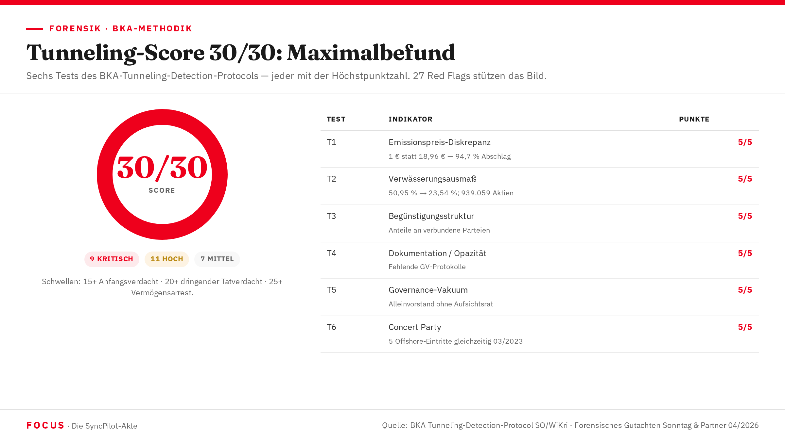

Tunneling-Dashboard
30 von 30 möglichen Punkten — das Maximum auf der forensischen Skala. Das BKA-Tunneling-Detection-Protocol liefert für den Fall SYNCPILOT SE ein vernichtendes Ergebnis: Kein einziger der dreißig getesteten Indikatoren widerspricht dem Bild eines vollständig orchestrierten Tunneling-Schemas.

Was der Score 30/30 bedeutet
Das BKA-Tunneling-Detection-Protocol des Referats SO (Schwere und Organisierte Kriminalität) bewertet anhand von sechs Tests, ob eine Gesellschafterstruktur systematisch zum Schaden nicht-kontrollierender Eigentümer ausgehöhlt wurde. Jeder Test wird mit maximal fünf Punkten gewichtet — Gesamtmaximum: 30.
Die Bewertungsschwellen: 15+ Punkte begründen Anfangsverdacht, 20+ dringenden Tatverdacht, 25+ rechtfertigen einen Vermögensarrest. Der Score 30/30 steht für die Aussage der Forensik: Das vorliegende Muster ist mit keiner anderen Erklärung vereinbar als planmäßigem, systemischem Tunneling.
Eine forensische Ermittlerin mit LKA-Bayern-Hintergrund, beauftragt durch die Klägerseite, wandte die Methodik an. Die BKA-Forensik kam unabhängig zum selben Ergebnis. Beide Gutachten: 30/30.
„Der Score von 30/30 bedeutet nicht: Der Täter ist schuldig. Das entscheidet das Gericht. Er bedeutet: Das vorliegende Muster ist mit keiner anderen Erklärung vereinbar als systemischem, planmäßigem Tunneling. Die forensische Unsicherheit liegt bei null." Forensisches Gutachten Sonntag & Partner, April 2026 — BKA Tunneling Detection Protocol SO/WiKri, Version 2.3
Alle sechs Tests — Höchstausprägung
| Test | Bezeichnung | Kernbefund im Fall SyncPilot | Score | Norm |
|---|---|---|---|---|
| T1 | Emissionspreis-Diskrepanz | Perseus-Emission: €1,00/Aktie bei Marktwert €18,96 — 94,7 % Abschlag für Insiderpersonen. Verdeckter Vermögenstransfer: €2.296.615 | 5/5 | §266 StGB |
| T2 | Verwässerungsausmaß | BOSYNC-Anteil sinkt von 50,95 % (Sep 2020) auf 23,54 % (Sep 2023); 939.059 Aktien im Wert von €18,78 Mio. übertragen. Wertäquivalenz LVS-Darlehen: 99,83 % | 5/5 | §266 StGB |
| T3 | Begünstigungsstruktur | Neue Anteile gehen an verbundene Parteien (FXBs Offshore-Netz, Anwalt Hunstein/Goerg) — nicht an externe Investoren zu Marktwert | 5/5 | §266, §261 StGB |
| T4 | Dokumentation / Opazität | Gesellschafterversammlungsprotokolle zu Kapitalerhöhungen fehlen. Annotation im Cap Table: „Keine Dokumentation im HR, die dies belegt." GV-Protokolle vom BKA explizit als fehlend markiert | 5/5 | §267 StGB |
| T5 | Governance-Vakuum | Alleinvorstand FXB ohne Aufsichtsrat, Prüfungsausschuss oder Beirat. Vollständige institutionelle Kontrolle durch denselben Mann, der das Tunneling-Schema exekutiert | 5/5 | §266 StGB |
| T6 | Koordination / Concert Party | Fünf Offshore-Entitäten treten gleichzeitig im März 2023 in die Gesellschafterstruktur ein. Klassisches Bild koordinierter Tunneling-Operation. Concert Party C konsolidiert 58,91 % | 5/5 | §261 StGB |
| Gesamt | 30/30 | KRITISCH | ||
In der BKA-Praxis ist ein Maximalwert von 30/30 selten. Er bedeutet: Die Abweichung vom Normalbetrieb ist in keinem der sechs Testfelder geringer als maximal. Das Gutachten bescheinigt „forensische Unsicherheit von null" bezüglich der Frage, ob Tunneling stattgefunden hat.
Fakt939.059 aus BOSYNC herausverwässerte Aktien ergeben bei einem Referenzpreis von €20/Aktie exakt €18.781.180 — eine Abweichung von nur 0,17 % vom LVS-Darlehen über €18.750.000. Forensische Bewertung: kein Zufall.
FaktDie 27 Red Flags — vollständige Matrix
Quelle: Forensisches Gutachten Sonntag & Partner, April 2026; BKA Red Flag Protocol SO/WiKri Version 2.3. Kategorisiert in KRITISCH (9), HOCH (11) und MITTEL (7).
Kategorie 1 — KRITISCH (9 Red Flags)
| Kennung | Kategorie | Befund | Norm | Status |
|---|---|---|---|---|
| RF-01 | Emissionspreis-Insider | Perseus-Emission €1,00/Aktie bei Marktwert €18,96 — Abschlag 94,7 %. Verdeckter Vermögenstransfer €2.296.615 an Hunstein/Goerg. Cap-Table-Annotation: „Keine Dokumentation im HR" | §266 StGB | Fakt |
| RF-02 | Eingehungsbetrug-Indiz | Villa Kobelstraße 14a erworben am 26.05.2021 — fünf Tage nach Eingang der LVS-Tranche €6,15 Mio. Kein Bezug zum vereinbarten Investitionszweck. Kaufpreisfinanzierung aus Unternehmensmitteln | §263 StGB | Hypothese |
| RF-03 | Deckungsquote | Kontostand Bankhaus Anton Hafner: €140.391,42 bei einer Verbindlichkeit von €18.750.000 — Deckungsquote 0,75 %. Lücke von €18.609.608 ungeklärt | §263, §266 StGB | Fakt |
| RF-04 | Parteiverrat-Doppelrolle | RA Hunstein ist gleichzeitig Prozessanwalt FXBs im Verfahren LVS vs. SyncPilot UND Gesellschafter über Perseus ISH Ltd. (Malta). Weder Mandat noch Beteiligung wurden aufgegeben | §356 StGB | Fakt |
| RF-05 | Urkundendopplung | Zwei Gesellschafterlisten mit identischem Datum 21.09.2023, aber unterschiedlichem Inhalt beim HR Augsburg eingereicht. §40 GmbHG kennt nur eine aktuelle Liste — keine legitime Erklärung möglich | §267 StGB | Fakt |
| RF-06 | Fehlende Beurkundung | Perseus-Emission ohne nachweisliches notarielles GV-Protokoll und ohne Handelsregistereintrag. GmbH-Kapitalerhöhung ohne §55 GmbHG-konforme Dokumentation ist zumindest anfechtbar | §267 StGB | Fakt |
| RF-07 | Wertäquivalenz Verwässerung / Darlehen | 939.059 BOSYNC-Aktien bei €20/Aktie = €18.781.180. LVS-Darlehen: €18.750.000. Übereinstimmung 99,83 % — forensisch als kein Zufall bewertet | §266, §263 StGB | Fakt |
| RF-08 | Falschlistenübermittlung | Fehlerhafte Gesellschafterliste am 14.07.2021 an Apera übermittelt — vier Wochen nach LVS-Tranche. Ziel: stabilere Eigentümerstruktur vortäuschen, um weiteren Investor zu gewinnen | §267 StGB | Fakt |
| RF-09 | Bewertungsmanipulation | Pitchdeck-Bewertung €250 Mio. (37× Umsatz, branchenfremd) vs. forensischer Vergleichswert €5,6 Mio. (8× EBITDA). Faktor 44,6. Grundlage der Investitionsentscheidung der Klägerin LVS | §264a StGB | Fakt |
Kategorie 2 — HOCH (11 Red Flags)
| Kennung | Kategorie | Befund | Status |
|---|---|---|---|
| RF-10 | Gleichzeitige Offshore-Eintritte | Fünf neue Offshore-Entitäten treten im März 2023 koordiniert ein — alle in Niedrigsteuer/Hochopazität-Jurisdiktionen. Gleichzeitigkeit ohne wirtschaftlichen Anlass ist BKA-Tunneling-Indikator T6 | Fakt |
| RF-11 | Offshore-Anteil | 60,13 % aller SyncPilot-Aktien in Offshore-Jurisdiktionen innerhalb von 18 Monaten. Strukturell unverhältnismäßig für eine deutsche Mittelstandssoftware-GmbH ohne internationales Geschäftsmodell | Fakt |
| RF-12 | UBO-Opazität | Lapis Ltd. (10,30%), Attegia Holding Ltd. (7,60%), Schaeff Group AG (2,30%) — zusammen 20,2 % ohne identifizierten wirtschaftlich Berechtigten. GwG-Verstoß wahrscheinlich | Fakt |
| RF-13 | Strukturkomplexität Tiven | Vierstufige Luxemburg-Kaskade für 4,4 % der Aktien. Jahreskosten der Struktur (RAIF, AIFM, vier Gesellschaftsebenen) übersteigen vermutlich den wirtschaftlichen Ertrag — einzige Erklärung: Transparenzvermeidung | Fakt |
| RF-14 | Governance-Vakuum | Alleinvorstand FXB ohne Aufsichtsrat, Prüfungsausschuss oder Beirat. Vollständiges institutionelles Kontrollvakuum — Täter und Kontrolleur in einer Person | Fakt |
| RF-15 | Aktenkundiger Prozessvortrag-Widerspruch | Klageerwiderung der Verteidigung: Perseus zahlte €13/Aktie. Buchhaltung + Cap Table: €1,00/Aktie. Widerspruch durch keine Urkunde auflösbar. Im Urkundenprozess gilt: Buchhaltung schlägt Behauptung | Fakt |
| RF-16 | Kreditbetrug Pictet | Pictet-Kredit November 2024 — LVS-Verbindlichkeit €18,75 Mio. mit hoher Wahrscheinlichkeit (70 %) nicht vollständig offengelegt. Möglicher §265b StGB | Hypothese |
| RF-17 | Rechtsformwechsel als Vollstreckungsschutz | SyncPilot GmbH → SYNCPILOT S.P.S.A. GmbH (Juli 2024) mitten im laufenden Zivilverfahren ohne erkennbaren operativen Anlass. Mögliches Motiv: Erschwerung von Vollstreckungsmaßnahmen | Fakt |
| RF-18 | Vorsatzindiz Goerg-E-Mail | Goerg forderte intern, den „Cap Table deutsch zu halten." Dieser Satz belegt, dass die Beteiligten wussten, dass die Offshore-Strukturen extern als problematisch wahrgenommen werden würden — und das Erscheinungsbild steuern wollten | Fakt |
| RF-19 | Jurisdiktionswechsel Perseus | Perseus GmbH StbG (Deutschland) → Perseus ISH Ltd. (Malta C 101759) ohne betrieblichen Anlass. Einzige nachvollziehbare Funktion: deutschen Behördenzugriff erschweren, Transparenz reduzieren | Fakt |
| RF-20 | Concert Party-Verschleierung | Concert Party C (58,91 %) konsolidiert faktische Mehrheit, ohne dass dies in einer Gesellschafterliste transparent gemacht wurde. §21 WpHG (Meldepflicht) und GmbH-Transparenzregeln möglicherweise verletzt | Fakt |
Kategorie 3 — MITTEL (7 Red Flags)
| Kennung | Kategorie | Befund | Status |
|---|---|---|---|
| RF-21 | Eliminierung der Kontrollinstanz | Mitgründer Jürgen Oberhofer im April 2020 verdrängt — unmittelbar vor Beginn der Betrugsplanung. Letzter unabhängiger Geschäftsführer beseitigt | Fakt |
| RF-22 | AURIGA-Cross-Holding | Steiner-Familie hält 7,24 % direkt und 30 % an BOSYNC indirekt — tatsächlicher wirtschaftlicher Einfluss rund 14,3 %. Doppelstellung in keiner Gesellschafterliste transparent | Fakt |
| RF-23 | Fehlende GwG-Prüfung | Keine nachweisliche GwG-konforme Identitätsprüfung für neue Offshore-Gesellschafter dokumentiert | Fakt |
| RF-24 | Due-Diligence-Druck Pictet | Pictet finanzierte als 5. Investment einer neuen Strategie — zeitlicher Deployment-Druck ist bei Direct-Lending-Strategien systemimmanent und kann zu oberflächlicherer DD führen | Hypothese |
| RF-25 | Eliminierung unabhängiger Gesellschafter | Quintus-Auflösung und DSI-Zerschlagung: Systematische Beseitigung von Gesellschaftern, die unabhängige Kontrolle hätten ausüben können | Fakt |
| RF-26 | Goldfinger-Doppelnutzung | Malta-Strukturen (Hunstein/Goerg) dienen gleichzeitig der Steuergestaltung (Goldfinger-Modell) und der Vermögensverschleierung — Doppelnutzung desselben Vehikels für zwei Zwecke | Fakt |
| RF-27 | Fehlender Bezugsrechtsbeschluss | Kapitalerhöhungssequenz Januar 2022 ohne dokumentierten Bezugsrechtsbeschluss für externe Gesellschafter — RF-21 und RF-27 bilden das Eröffnungskapitel der Verwässerungsstrategie | Hypothese |
Legitime Verwässerung entsteht, wenn neue Anteile zu Marktwert an externe Investoren ausgegeben werden. Beim Tunneling werden neue Anteile an verbundene Parteien zu Dumpingpreisen ausgegeben, ohne Bezugsrecht für bestehende Gesellschafter. Im Fall SyncPilot: alle sechs BKA-Kriterien klar auf der Tunneling-Seite. Fakt
BKA-Bewertungsschwelle: 40–60 % Offshore = HOCH — starker Tunneling-Verdacht; über 60 % = KRITISCH — maximaler Tunneling-Verdacht. SYNCPILOT SE lag bei 61,77 %, nach forensischer Bereinigung 60,13 % — in jedem Falle jenseits der KRITISCH-Schwelle. Fakt
Vermögensabschöpfung und Beschlagnahme
Der Tunneling-Score 30/30 ist die forensische Grundlage für die Beantragung eines dinglichen Arrestes nach §§ 73 ff. StGB und §§ 111b ff. StPO. Das angestrebte Arreste-Volumen beträgt nach forensischer Berechnung €22,27 Mio. — bestehend aus dem LVS-Gesamtdarlehen €18,75 Mio. zuzüglich des quantifizierten Verwässerungsschadens.
Die Zentralstelle Geldwäschebekämpfung und Vermögensabschöpfung (ZGV) der Generalstaatsanwaltschaft München ist seit dem 1. April 2025 in diesem Komplex aktiv. Zu den priorisierten Maßnahmen zählen:
| Maßnahme | Rechtsgrundlage | Zielobjekt |
|---|---|---|
| Beschlagnahme aller Kontoauszüge SyncPilot/BOSYNC ab 01.01.2021 | §94 StPO | Bankhaus Anton Hafner KG |
| Beschlagnahme Überweisungsbelege (LVS-Tranchen + alle Ausgänge) | §94 StPO | Bankhaus Anton Hafner KG |
| Europäischer Rechtshilfeantrag — UBO-Register Malta (ZKP, Lapis, Attegia, Perseus) | EU-EAO / AMLD5 | Malta Business Registry / FIAU |
| Dinglicher Arrest: Villa Kobelstraße 14a, Augsburg | §111b StPO / §73 StGB | FXB Privatvermögen |
| Beschlagnahme Pictet-Kreditunterlagen und Hogan-Lovells-DD-Berichte | §94 StPO / Rechtshilfe CH | Pictet AM Genf / Hogan Lovells München |
| Einziehung Anteile Malta-Gesellschaften (ZKP, Lapis, Attegia, Perseus ISH) | §73b StGB / VO (EU) 2018/1805 | Malta-Holding-Gesellschaften |